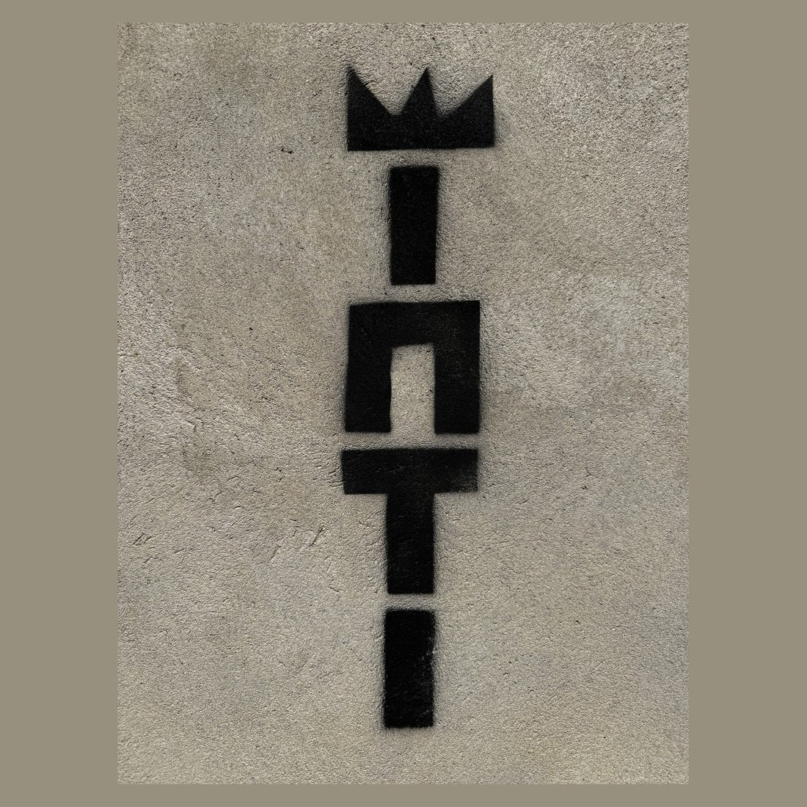
Inti
His tag — a crown over bold letters — the mark he signs across his work.
Self-taught artist · Lobitos, Peru
A living studio by the ocean in Lobitos — where art brings people together.
The artist
Inti has lived in Lobitos — a laid-back surf town on the desert coast of Piura, in northern Peru, loved by surfers for its long left-hand waves — for 15 years. Since the pandemic, his home has been a large creative space given over entirely to art.
Self-taught, he has been making art for 10 years, developing three signatures of his own. He was once an English teacher in nearby Talara, and still works there as a translator for doctors.
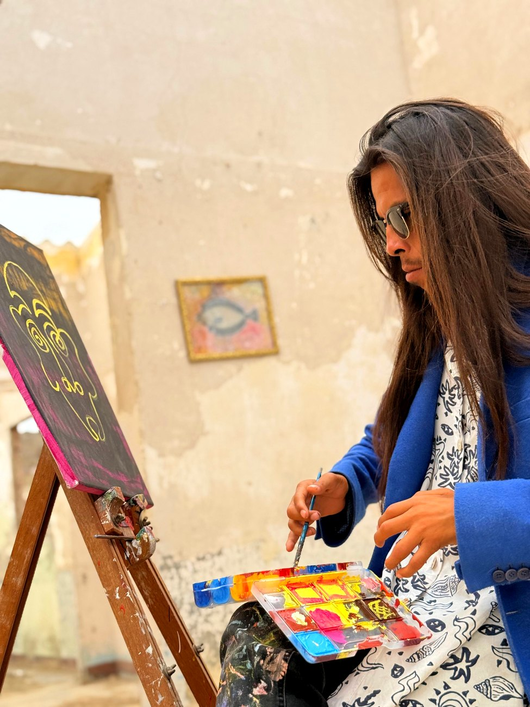
His belief
More than anything, Inti believes that art can bring people together and transform their lives. His studio is a gathering place — for visiting artists, travelers and local children — where making something by hand becomes something shared.
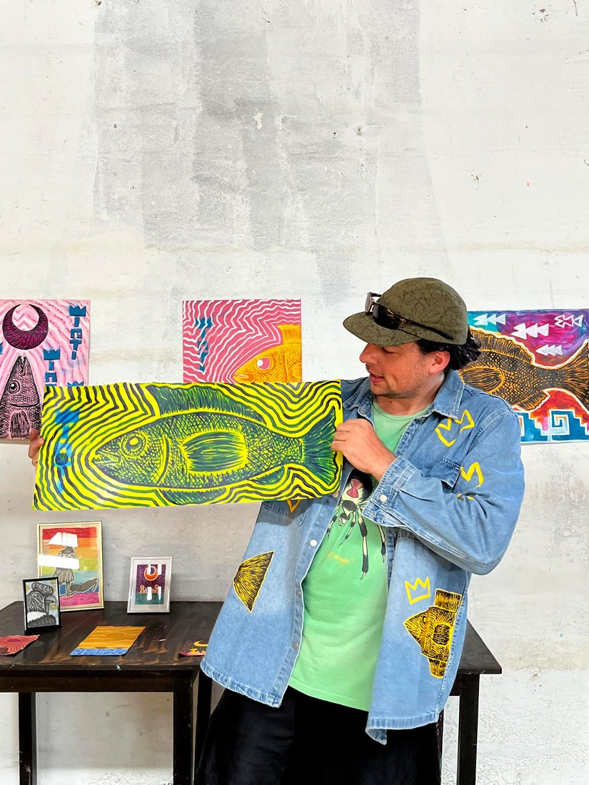
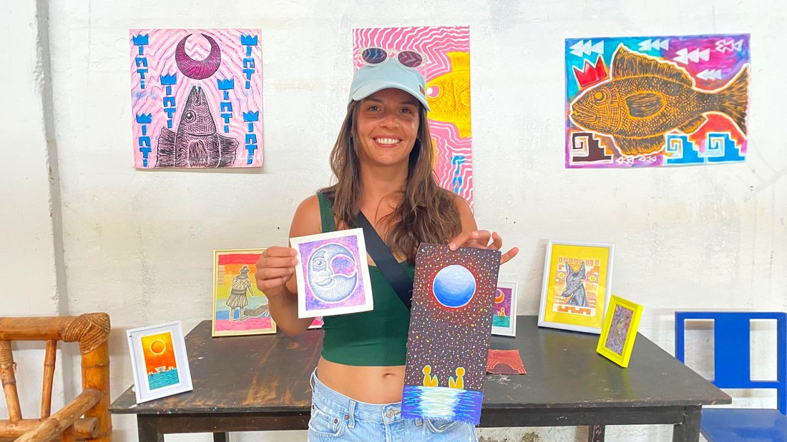
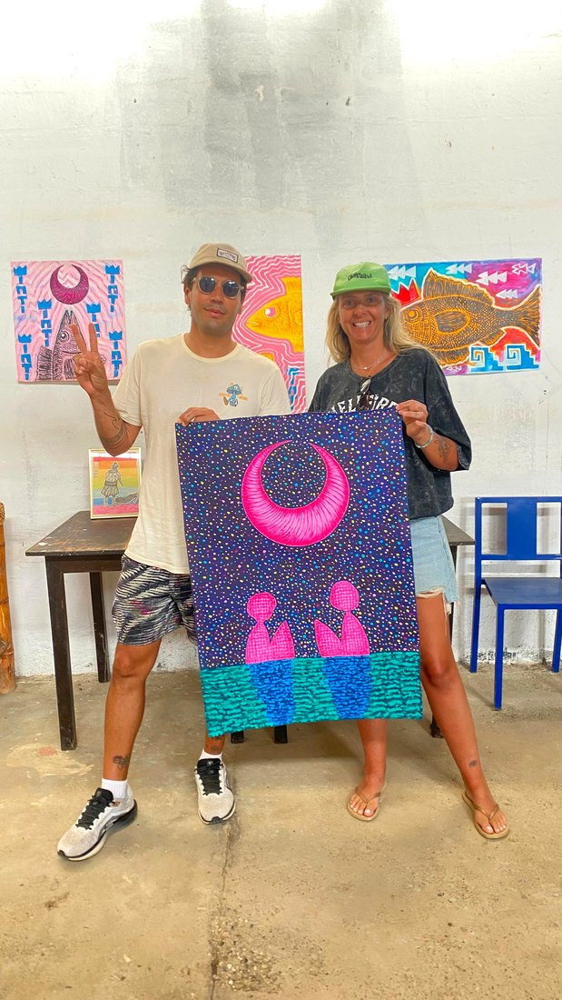
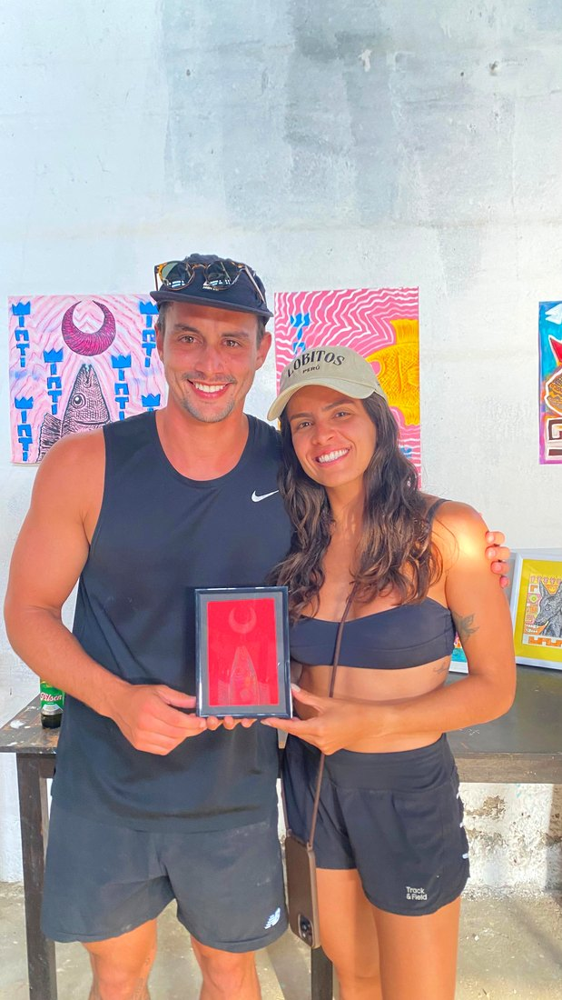
His hand
Three motifs return through Inti's work — a name, a face, and a fish. Each is painted in many colors; the pieces shown here are just examples.

His tag — a crown over bold letters — the mark he signs across his work.
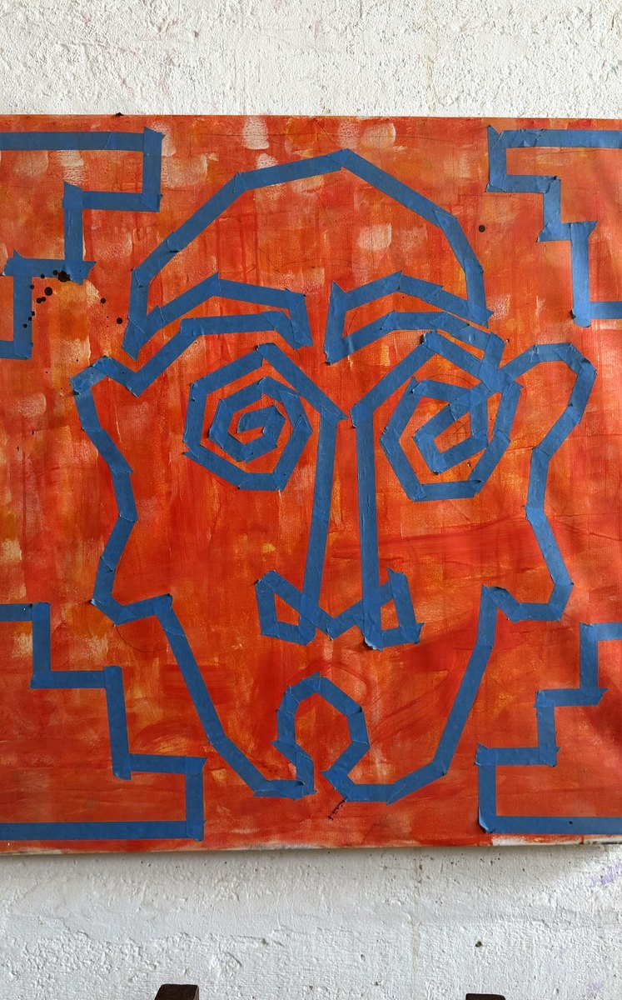
A face drawn from the ancient north — Moche and pre-Columbian lines, reimagined in his own hand.
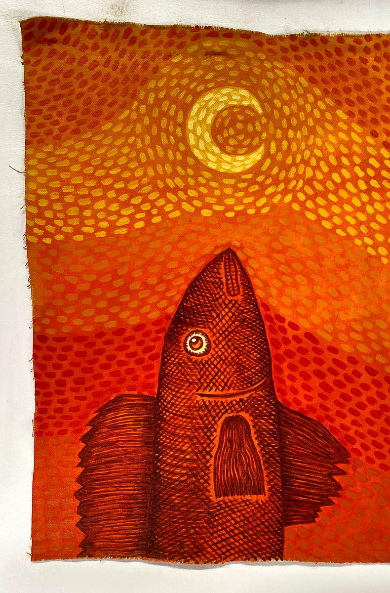
A fish rising to a crescent moon — the sea and the sky in one frame.
Selected work
A selection of Inti's paintings and prints. Tap any piece to enlarge.
Every piece is original and available to purchase. Message Inti about a work to ask the price and arrange payment and delivery.
Ask about a piece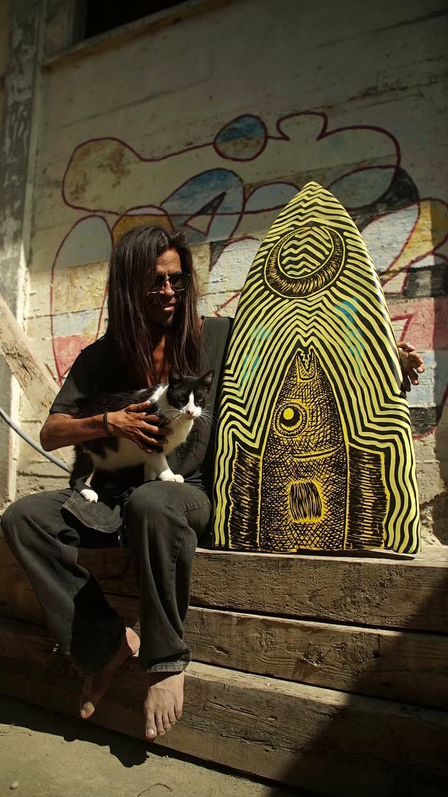
Artists in residence
Inti hosts visiting artists to live alongside him in the space. You get the run of the studio and all its materials, and the slow pleasures of Lobitos — the surf, the desert light, the quiet.
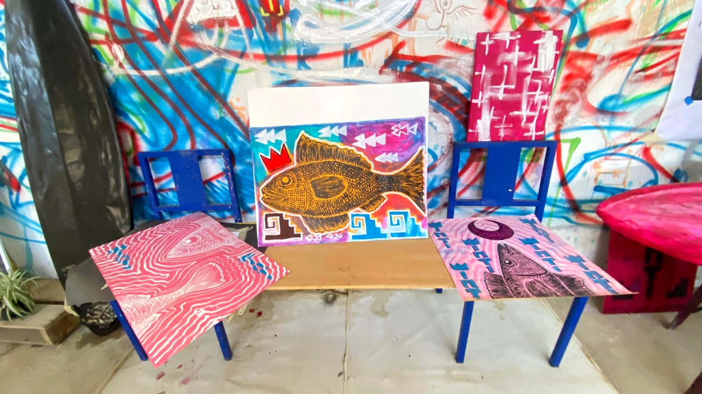
For schoolchildren
Inti opens the studio to local schoolchildren with free educational programs — hands-on workshops in drawing, painting and printmaking, surrounded by real work in a real artist's space.
Teachers, schools and community groups are welcome to get in touch to arrange a visit or workshop.
Arrange a program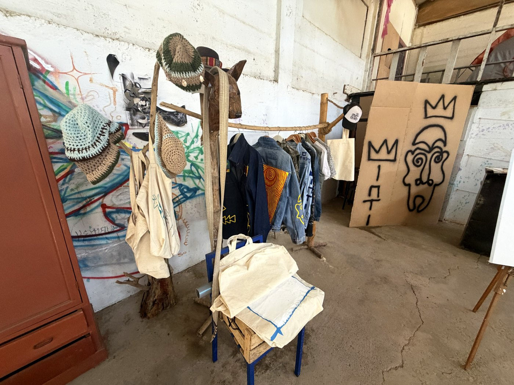
Wearable work
Inti's signatures live on cloth as well as canvas — hand-painted denim jackets, shorts and one-of-a-kind pieces, each made by hand and to order.
Message Inti to see what's available and to order a piece.
Ask about clothingGet in touch
The studio is in Lobitos, Piura. The fastest way to reach Inti is by message.
Lobitos · Piura · Peru